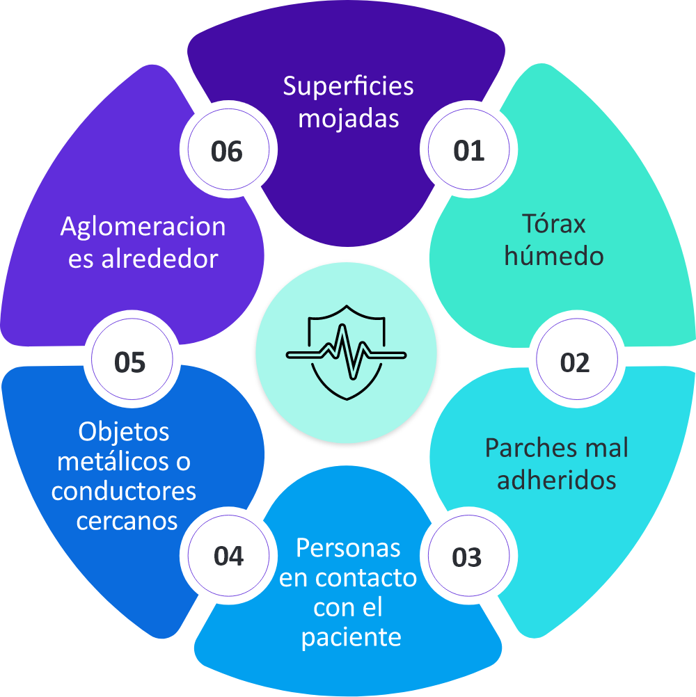

Seguridad durante la desfibrilación
Durante el análisis y la descarga del DEA, ninguna persona debe tocar al paciente.
Antes de la descarga, el reanimador debe decir en voz alta:
Luego debe verificar visualmente que todos estén alejados.
Superficies mojadas.
Tórax húmedo.
Parches mal adheridos.
Personas en contacto con el paciente.
Objetos metálicos o conductores cercanos.
Aglomeraciones alrededor.

Aunque el DEA es seguro, tocar al paciente durante una descarga puede representar un riesgo para quien está en contacto.
Antes de analizar o descargar, verifica que nadie toque al paciente.
No administres descarga si alguien está en contacto con la persona.
Orden verbal clave: “¡Nadie toca al paciente!”